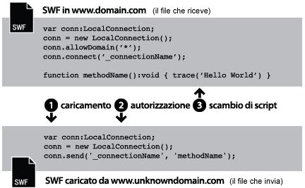
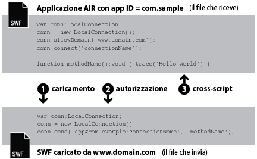
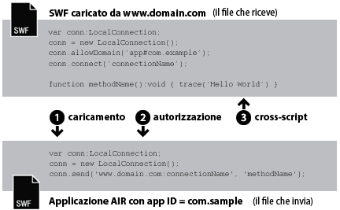

| Pacchetto | flash.net |
| Classe | public class LocalConnection |
| Ereditarietà | LocalConnection |
| Versione linguaggio: | ActionScript 3.0 |
| Versioni runtime: | AIR 1.0, Flash Player 9, Flash Lite 4 |
- All'interno di un singolo file SWF
- Tra più file SWF
- Tra contenuti (basati su SWF o basati su HTML) nelle applicazioni AIR
- Tra il contenuto (basato su SWF o basato su HTML) in un'applicazione AIR e il contenuto SWF in esecuzione in un browser
Supporto profili AIR: questa funzionalità è supportata in tutti i sistemi operativi desktop e in tutti i dispositivi AIR per TV, ma non nei dispositivi mobili. È possibile verificare se la funzionalità è supportata in fase runtime utilizzando la proprietà LocalConnection.isSupported. Per ulteriori informazioni sul supporto delle API tra più profili, vedete Supporto dei profili AIR.
Nota: i dispositivi AIR per TV supportano la comunicazione solo tra contenuti SWF nelle applicazioni AIR.
Le connessioni locali consentono questo tipo di comunicazione tra i file SWF senza ricorrere a fscommand() o JavaScript. Gli oggetti LocalConnection possono comunicare solo tra i file in esecuzione sullo stesso client, ma possono essere eseguiti in applicazioni diverse (ad esempio, un file in esecuzione in un browser e un file SWF in esecuzione in Adobe AIR).
Gli oggetti LocalConnection creati in ActionScript 3.0 sono in grado di comunicare con gli oggetti LocalConnection creati in ActionScript 1.0 o 2.0. Vale anche il contrario: gli oggetti LocalConnection creati in ActionScript 1.0 o 2.0 sono in grado di comunicare con gli oggetti LocalConnection creati in ActionScript 3.0. Flash Player gestisce in modo automatico questa comunicazione tra oggetti LocalConnection di versioni diverse.
Sono disponibili tre modi per aggiungere metodi di callback a un oggetto LocalConnection:
- Creare una sottoclasse della classe LocalConnection e aggiungere dei metodi
- Impostare la proprietà
LocalConnection.clientsu un oggetto che implementi i metodi - Creare una classe dinamica per estendere LocalConnection e associare in modo dinamico i metodi
Per comprendere come utilizzare gli oggetti LocalConnection per implementare la comunicazione tra due file, è utile identificare i comandi utilizzati in ogni file. Un file viene definito ricevente ed è il file che contiene il metodo da richiamare. Il file ricevente deve contenere un oggetto LocalConnection e una chiamata al metodo connect(). L'altro file viene definito mittente ed è il file che richiama il metodo. Il file mittente deve contenere un altro oggetto LocalConnection e una chiamata al metodo send().
La scelta tra send() e connect() dipende dal fatto che i file si trovano nello stesso dominio, in domini diversi con nomi di dominio prevedibili o in domini diversi con nomi di dominio imprevedibili o dinamici. Nei paragrafi seguenti vengono illustrate le tre diverse situazioni, con esempi di codice.
Stesso dominio. Il modo più semplice per utilizzare un oggetto LocalConnection consiste nel consentire la comunicazione solo tra gli oggetti LocalConnection di uno stesso dominio, poiché per impostazione predefinita Flash Player consente la comunicazione nello stesso dominio. Quando due file dello stesso dominio comunicano, non è necessario implementare alcuna misura di sicurezza speciale ed è sufficiente passare lo stesso valore per il parametro connectionName sia del metodo connect() che del metodo send():

// receivingLC is in http://www.domain.com/receiving.swf
receivingLC.connect('myConnection');
// sendingLC is in http://www.domain.com/sending.swf
// myMethod() is defined in sending.swf
sendingLC.send('myConnection', 'myMethod');
Domini diversi con nomi di dominio prevedibili. Quando due file SWF di diversi domini comunicano, è necessario consentire la comunicazione tra i due domini chiamando il metodo allowDomain(). Inoltre, è necessario qualificare il nome della connessione nel metodo send() con il nome di dominio dell'oggetto LocalConnection ricevente:

// receivingLC is in http://www.domain.com/receiving.swf
receivingLC.allowDomain('www.anotherdomain.com');
receivingLC.connect('myConnection');
// sendingLC is in http://www.anotherdomain.com/sending.swf
sendingLC.send('www.domain.com:myConnection', 'myMethod');
Domini diversi con nomi di dominio imprevedibili. Talvolta, può essere necessario rendere il file con l'oggetto LocalConnection ricevente più portabile tra i domini. Per evitare di specificare il nome di dominio nel metodo send() e tuttavia indicare che gli oggetti LocalConnection ricevente e mittente non appartengono allo stesso dominio, anteponete al nome della connessione il carattere di sottolineatura (_) sia nella chiamata a connect() che nella chiamata a send(). Per consentire la comunicazione tra i due domini, chiamate il metodo allowDomain() e passate i domini da cui desiderate consentire le chiamate LocalConnection. In alternativa, passate il carattere jolly (*) come argomento per consentire le chiamate da tutti i domini:

// receivingLC is in http://www.domain.com/receiving.swf
receivingLC.allowDomain('*');
receivingLC.connect('_myConnection');
// sendingLC is in http://www.anotherdomain.com/sending.swf
sendingLC.send('_myConnection', 'myMethod');
Da Flash Player a un'applicazione AIR. Un oggetto LocalConnection creato nella sandbox dell'applicazione AIR utilizza una stringa speciale come prefisso di connessione anziché un nome di dominio. La stringa ha il formato app#appID.pubID (appID è l'ID applicazione e pubID è l'ID editore dell'applicazione). (Includete l'ID editore solo se l'applicazione AIR ne utilizza uno.) Ad esempio, se un'applicazione AIR ha l'ID applicazione "com.example" ed è sprovvista di ID editore, potreste usare la seguente stringa di connessione locale: app#com.example:myConnection. L'applicazione AIR deve chiamare anche il metodo allowDomain(), passando il dominio di origine del file SWF chiamante:

// receivingLC is an AIR application with app ID = com.example (and no publisher ID)
receivingLC.allowDomain('www.domain.com');
receivingLC.connect('myConnection');
// sendingLC is in http://www.domain.com/sending.swf
sendingLC.send('app#com.example:myConnection', 'myMethod');
Nota: se un'applicazione AIR carica un file SWF fuori della sandbox dell'applicazione AIR, le regole per stabilire una connessione locale con quel file SWF sono uguali a quelle per stabilire una connessione con un file SWF eseguito in Flash Player.
Da un'applicazione AIR a Flash Player. Quando un'applicazione AIR comunica con un file SWF eseguito nel runtime di Flash Player, dovete consentire la comunicazione tra AIR e Flash Player chiamando il metodo allowDomain() e passando il prefisso di connessione dell'applicazione AIR. Ad esempio, se un'applicazione AIR ha l'ID applicazione "com.example" ed è sprovvista di ID editore, potreste passare la stringa app#com.example al metodo allowDomain(). Inoltre, è necessario qualificare il nome della connessione nel metodo send() con il nome di dominio dell'oggetto LocalConnection ricevente (utilizzate "localhost" come dominio per i file SWF caricati dal file system locale):

// receivingLC is in http://www.domain.com/receiving.swf
receivingLC.allowDomain('app#com.example');
receivingLC.connect('myConnection');
// sendingLC is an AIR application with app ID = com.example (and no publisher ID)
sendingLC.send('www.domain.com:myConnection', 'myMethod');
Da un'applicazione AIR a un'altra applicazione AIR. Per consentire a due applicazioni AIR di comunicare, dovete consentire la comunicazione tra di esse chiamando il metodo allowDomain() e passando il prefisso di connessione dell'applicazione AIR inviante. Ad esempio, se l'applicazione inviante ha l'ID applicazione "com.example" ed è sprovvista di ID editore, potreste passare la stringa app#com.example al metodo allowDomain() nell'applicazione ricevente. Inoltre, è necessario qualificare il nome della connessione nel metodo send() con il prefisso di connessione dell'oggetto LocalConnection ricevente:

// receivingLC is an AIR application with app ID = com.sample (and no publisher ID)
receivingLC.allowDomain('app#com.example');
receivingLC.connect('myConnection');
// sendingLC is an AIR application with app ID = com.example (and no publisher ID)
sendingLC.send('app#com.sample:myConnection', 'myMethod');
È possibile utilizzare gli oggetti LocalConnection per inviare e ricevere dati in un solo file, ma non si tratta di un'implementazione tipica.
Per ulteriori informazioni sui metodi send() e connect(), vedete la descrizione del parametro connectionName nelle sezioni relative a LocalConnection.send() e LocalConnection.connect(). Vedete anche le sezioni relative a allowDomain() e domain.
Altri esempi
Elementi API correlati
flash.net.LocalConnection.allowDomain()
flash.net.LocalConnection.domain
 Nascondi proprietà pubbliche ereditate
Nascondi proprietà pubbliche ereditate Mostra proprietà pubbliche ereditate
Mostra proprietà pubbliche ereditate| Proprietà | Definito da | ||
|---|---|---|---|
| client : Object
Indica l'oggetto su cui vengono chiamati i metodi di callback. | LocalConnection | ||
 | constructor : Object
Un riferimento all'oggetto classe o alla funzione di costruzione per una determinata istanza di oggetto. | Object | |
| domain : String [sola lettura]
Una stringa che rappresenta il dominio della posizione del file corrente. | LocalConnection | ||
| isPerUser : Boolean
Indica se l’oggetto LocalConnection è associato all’utente corrente (true) oppure è accessibile globalmente a tutti gli utenti del computer (false). | LocalConnection | ||
| isSupported : Boolean [statico] [sola lettura]
La proprietà isSupported è impostata su true se la classe LocalConnection è supportata nella piattaforma corrente, altrimenti è impostata su false. | LocalConnection | ||
| Metodo | Definito da | ||
|---|---|---|---|
Crea un oggetto LocalConnection. | LocalConnection | ||
| addEventListener(type:String, listener:Function, useCapture:Boolean = false, priority:int = 0, useWeakReference:Boolean = false):void
Registra un oggetto listener di eventi con un oggetto EventDispatcher, in modo che il listener riceva la notifica di un evento. | EventDispatcher | |
Specifica uno o più domini che possono inviare chiamate LocalConnection a questa istanza LocalConnection. | LocalConnection | ||
Specifica uno o più domini che possono inviare chiamate LocalConnection a questo oggetto LocalConnection. | LocalConnection | ||
Chiude (disconnette) un oggetto LocalConnection. | LocalConnection | ||
Prepara un oggetto LocalConnection a ricevere i comandi inviati da un comando send() (dall'oggetto LocalConnection mittente). | LocalConnection | ||
|
Invia un evento nel flusso di eventi. | EventDispatcher | |
|
Verifica se per l'oggetto EventDispatcher sono presenti listener registrati per un tipo specifico di evento. | EventDispatcher | |
|
Indica se per un oggetto è definita una proprietà specifica. | Object | |
|
Indica se un'istanza della classe Object si trova nella catena di prototipi dell'oggetto specificato come parametro. | Object | |
|
Indica se la proprietà specificata esiste ed è enumerabile. | Object | |
|
Rimuove un listener dall'oggetto EventDispatcher. | EventDispatcher | |
Richiama il metodo denominato methodName su una connessione aperta con il metodo connect(connectionName) (nell'oggetto LocalConnection ricevente). | LocalConnection | ||
|
Imposta la disponibilità di una proprietà dinamica per le operazioni cicliche. | Object | |
|
Restituisce la rappresentazione in formato stringa di questo oggetto, formattato in base alle convenzioni specifiche per le versioni localizzate. | Object | |
|
Restituisce la rappresentazione in formato stringa dell'oggetto specificato. | Object | |
|
Restituisce il valore di base dell'oggetto specificato. | Object | |
|
Verifica se un listener di eventi è registrato con questo oggetto EventDispatcher o qualsiasi suo antenato per il tipo di evento specificato. | EventDispatcher | |
| Evento | Riepilogo | Definito da | ||
|---|---|---|---|---|
| [evento di trasmissione] Inviato quando Flash Player o l'applicazione AIR ottiene lo stato di attivazione del sistema operativo ed entra nello stato attivo. | EventDispatcher | ||
| Inviato quando viene generata un'eccezione in modo asincrono, cioè da un codice asincrono nativo. | LocalConnection | |||
| [evento di trasmissione] Inviato quando Flash Player o l'applicazione AIR perde l'attivazione del sistema operativo e sta entrando nello stato inattivo. | EventDispatcher | ||
| Inviato se una chiamata a LocalConnection.send() tenta di inviare dati a una funzione di sicurezza sandbox diversa. | LocalConnection | |||
| Inviato quando un oggetto LocalConnection segnala il proprio stato. | LocalConnection | |||
client | proprietà |
client:Object| Versione linguaggio: | ActionScript 3.0 |
| Versioni runtime: | AIR 1.0, Flash Player 9, Flash Lite 4 |
Indica l'oggetto su cui vengono chiamati i metodi di callback. L'oggetto predefinito è this, l'oggetto locale che si sta creando. È possibile impostare la proprietà client su un altro oggetto, e i metodi di callback vengono richiamati su tale oggetto.
Implementazione
public function get client():Object public function set client(value:Object):voidGenera
TypeError — La proprietà client deve essere impostata su un oggetto diverso da null.
|
Altri esempi
domain | proprietà |
domain:String [sola lettura] | Versione linguaggio: | ActionScript 3.0 |
| Versioni runtime: | AIR 1.0, Flash Player 9, Flash Lite 4 |
Una stringa che rappresenta il dominio della posizione del file corrente.
Nel contenuto in esecuzione nella funzione di sicurezza sandbox dell'applicazione in Adobe AIR (contenuto installato nell'applicazione AIR), il runtime utilizza la stringa app# seguita dall'ID applicazione per l'applicazione AIR (definito nel file di descrizione dell'applicazione) al posto del superdominio. Ad esempio, un connectionName per un'applicazione con l'ID applicazione com.example.air.MyApp connectionName viene risolto in "app#com.example.air.MyApp:connectionName".
Nei file SWF pubblicati per Flash Player 9 o versioni successive, la stringa restituita è il dominio esatto del file, compresi i sottodomini. Ad esempio, se il file si trova all'indirizzo www.adobe.com, questo comando restituisce "www.adobe.com".
Se il file è un file locale che risiede sul computer client in esecuzione in Flash Player, questo comando restituisce "localhost".
L'uso più comune di questa proprietà consiste nell'includere il nome del dominio dell'oggetto LocalConnection mittente come parametro per il metodo che si prevede di richiamare nell'oggetto LocalConnection ricevente, oppure di utilizzarla con LocalConnection.allowDomain() per accettare i comandi provenienti da un dominio specificato. Se abilitate la comunicazione solo tra oggetti LocalConnection che si trovano nello stesso dominio, probabilmente non è necessario utilizzare questa proprietà.
Implementazione
public function get domain():StringElementi API correlati
isPerUser | proprietà |
isPerUser:Boolean| Versione linguaggio: | ActionScript 3.0 |
| Versioni runtime: | Flash Player 10.0.32, AIR 1.5.2 |
Indica se l’oggetto LocalConnection è associato all’utente corrente (true) oppure è accessibile globalmente a tutti gli utenti del computer (false). Questa proprietà è applicabile solo al contenuto eseguito su Mac OS X; le altre piattaforme ignorano questo parametro. Le connessioni sui sistemi operativi Windows e Linux sono sempre configurate per utente.
In Flash Player 10.0.22 e versioni precedenti e in AIR 1.5.1 e versioni precedenti, tutti gli oggetti LocalConnection su Mac OS X hanno un ambito globale. Impostate sempre questa proprietà su true, a meno che dobbiate mantenere la compatibilità con versioni precedenti. Nelle versioni future, il valore predefinito di questa proprietà potrebbe essere cambiato in true.
Il valore predefinito è false.
Implementazione
public function get isPerUser():Boolean public function set isPerUser(value:Boolean):voidisSupported | proprietà |
isSupported:Boolean [sola lettura] | Versione linguaggio: | ActionScript 3.0 |
| Versioni runtime: | Flash Player 10.1, AIR 2 |
La proprietà isSupported è impostata su true se la classe LocalConnection è supportata nella piattaforma corrente, altrimenti è impostata su false.
Implementazione
public static function get isSupported():BooleanLocalConnection | () | Funzione di costruzione |
public function LocalConnection()| Versione linguaggio: | ActionScript 3.0 |
| Versioni runtime: | AIR 1.0, Flash Player 9, Flash Lite 4 |
Crea un oggetto LocalConnection. È possibile utilizzare gli oggetti LocalConnection per abilitare la comunicazione tra file diversi che sono in esecuzione sullo stesso computer client.
Elementi API correlati
allowDomain | () | metodo |
public function allowDomain(... domains):void| Versione linguaggio: | ActionScript 3.0 |
| Versioni runtime: | AIR 1.0, Flash Player 9, Flash Lite 4 |
Specifica uno o più domini che possono inviare chiamate LocalConnection a questa istanza LocalConnection.
Non è possibile usare questo metodo per consentire ai file che risiedono sul dominio mediante protocolli non protetti di accedere ai file che risiedono sul dominio mediante un protocollo protetto (HTTPS); utilizzare invece il metodo allowInsecureDomain().
Utilizzate questo metodo per fare in modo che un file secondario proveniente da un dominio differente possa effettuare chiamate LocalConnection al file principale, senza conoscere il dominio finale dal quale proverrà il file secondario. Questa situazione può verificarsi ad esempio quando si utilizzano i reindirizzamenti per il bilanciamento del carico di lavoro o i server di terze parti. In tale situazione, utilizzate la proprietà url dell'oggetto LoaderInfo utilizzato per il caricamento per ottenere il dominio da usare con il metodo allowDomain(). Ad esempio, se usate un oggetto Loader per caricare un file secondario, una volta caricato il file, verificate la proprietà contentLoaderInfo.url dell'oggetto Loader ed estraete il dominio dalla stringa dell'URL. In tal caso, attendete che il file sia caricato, poiché il valore della proprietà contentLoaderInfo.url non è definitivo e corretto finché il file non è stato completamente caricato.
In realtà può verificarsi anche la situazione opposta: è possibile creare un file secondario impostato per accettare le chiamate LocalConnection dal proprio elemento principale ma di cui non conosce il dominio. In tal caso, implementate questo metodo verificando se l'argomento del dominio corrisponde al dominio della proprietà loaderInfo.url nel file Anche in questo caso è necessario analizzare il dominio fuori dell'URL completo contenuto in loaderInfo.url. In questo caso, non è necessario attendere il caricamento del file principale poiché sarà già stato completato al momento del caricamento dell'elemento secondario.
Quando utilizzate questo metodo, considerate il modello di sicurezza di Flash Player. Per impostazione predefinita, un oggetto LocalConnection è associato alla sandbox del file che l'ha creato e le chiamate su più domini agli oggetti LocalConnection non sono consentite, a meno che non sia stato chiamato il metodo LocalConnection.allowDomain() nel file ricevente. Tuttavia, in Adobe AIR, il contenuto della funzione di sicurezza sandbox dell'applicazione (contenuto installato con l'applicazione AIR) non è interessato da queste limitazioni di sicurezza.
Per ulteriori informazioni sulla sicurezza, vedete l'argomento sulla sicurezza nel Centro per sviluppatori di Flash Player .
Nota: il metodo allowDomain() è stato modificato rispetto alla forma che aveva in ActionScript 1.0 e 2.0. Nelle versioni precedenti, allowDomain era un metodo di callback implementato dall'utente. In ActionScript 3.0, allowDomain() è un metodo incorporato di LocalConnection che viene chiamato. Grazie a questa modifica, allowDomain() funziona in modo molto simile a flash.system.Security.allowDomain().
Parametri
... domains — Una o più stringhe che assegnano i nomi ai domini da cui si desidera consentire le chiamate LocalConnection. Questo parametro prevede due eccezioni:
|
Genera
ArgumentError — Tutti i parametri specificati devono essere stringhe diverse da null.
|
Altri esempi
Elementi API correlati
allowInsecureDomain | () | metodo |
public function allowInsecureDomain(... domains):void| Versione linguaggio: | ActionScript 3.0 |
| Versioni runtime: | AIR 1.0, Flash Player 9, Flash Lite 4 |
Specifica uno o più domini che possono inviare chiamate LocalConnection a questo oggetto LocalConnection.
Il metodo allowInsecureDomain() funziona in modo simile al metodo allowDomain(), con l'eccezione che il metodo allowInsecureDomain() consente anche ai file con un'origine diversa da HTTPS di inviare chiamate LocalConnection ai file SWF da un'origine HTTPS. Questa differenza è significativa solo se chiamate il metodo allowInsecureDomain() da un file che è stato caricato tramite HTTPS. È necessario chiamare il metodo allowInsecureDomain() anche se si oltrepassa un confine tra non HTTPS e HTTPS all'interno di uno stesso dominio; per impostazione predefinita, non sono mai consentite chiamate LocalConnection da file non HTTPS a file HTTPS, anche all'interno dello stesso dominio.
Non è consigliabile effettuare chiamate a allowInsecureDomain(), poiché ciò può compromettere il livello di sicurezza offerto da HTTPS. Quando caricate un file tramite HTTPS, potete essere ragionevolmente sicuri dell'integrità del file durante la distribuzione in rete. Se successivamente autorizzate un file non HTTPS a effettuare chiamate LocalConnection al file HTTPS, accetterete chiamate da un file che potrebbe essere stato manomesso durante la distribuzione. Questa situazione richiede generalmente un livello aggiuntivo di vigilanza, poiché non è possibile considerare attendibile l'autenticità delle chiamate LocalConnection provenienti dal file HTTPS.
Per impostazione predefinita, i file che risiedono su domini che utilizzano il protocollo HTTPS sono accessibili solo da altri file che risiedono su domini che utilizzano il protocollo HTTPS. Questa implementazione conserva l'integrità fornita dal protocollo HTTPS.
Non è consigliabile utilizzare questo metodo per ignorare il comportamento predefinito, poiché la sicurezza HTTPS viene compromessa. Tuttavia, può essere necessario utilizzarlo per consentire l'accesso ai file SWF HTTPS pubblicati per Flash Player 9 o versioni successive da parte dei file SWF HTTP pubblicati per Flash Player 6 o precedente.
Per ulteriori informazioni sulla sicurezza, vedete l'argomento sulla sicurezza nel Centro per sviluppatori di Flash Player .
Parametri
... domains — Una o più stringhe che assegnano i nomi ai domini da cui si desidera consentire le chiamate LocalConnection. Per questo parametro esistono due eccezioni:
|
Genera
ArgumentError — Tutti i parametri specificati devono essere stringhe diverse da null.
|
Altri esempi
Elementi API correlati
close | () | metodo |
public function close():void| Versione linguaggio: | ActionScript 3.0 |
| Versioni runtime: | AIR 1.0, Flash Player 9, Flash Lite 4 |
Chiude (disconnette) un oggetto LocalConnection. Eseguite questo comando se non desiderate più che l'oggetto accetti i comandi: ad esempio, per eseguire un comando connect() che utilizza lo stesso parametro connectionName in un altro file SWF.
Genera
ArgumentError — L'istanza LocalConnection non è connessa, quindi non può essere chiusa.
|
Elementi API correlati
connect | () | metodo |
public function connect(connectionName:String):void| Versione linguaggio: | ActionScript 3.0 |
| Versioni runtime: | AIR 1.0, Flash Player 9, Flash Lite 4 |
Prepara un oggetto LocalConnection a ricevere i comandi inviati da un comando send() (dall'oggetto LocalConnection mittente). L'oggetto utilizzato con il metodo connect()viene definito oggetto LocalConnection ricevente. Gli oggetti mittenti e riceventi devono essere in esecuzione sullo stesso computer client.
Per evitare una condizione race, definite i metodi associati all'oggetto LocalConnection ricevente prima di chiamare questo metodo, come mostrato nell'esempio della classe LocalConnection.
Per impostazione predefinita, l'argomento connectionName viene risolto nel valore "superdomain:connectionName", dove superdomain è il superdominio del file che contiene il comando connect(). Ad esempio, se il file che contiene l'oggetto LocalConnection ricevente si trova in www.someDomain.com, connectionName risolve a "someDomain.com:connectionName". Se un file in esecuzione in Flash Player si trova sul computer client, il valore assegnato a superdomain è "localhost".
Nel contenuto in esecuzione nella funzione di sicurezza sandbox dell'applicazione in Adobe AIR (contenuto installato nell'applicazione AIR), il runtime utilizza la stringa app# seguita dall'ID applicazione per l'applicazione AIR (definito nel file di descrizione dell'applicazione) al posto del superdominio. Ad esempio, un connectionName per un'applicazione con l'ID applicazione com.example.air.MyApp connectionName viene risolto in "app#com.example.air.MyApp:connectionName".
Sempre per impostazione predefinita, Flash Player consente all'oggetto LocalConnection ricevente di accettare comandi solo dagli oggetti LocalConnection mittenti per cui anche il nome di connessione viene risolto nel valore "superdomain:connectionName". In questo modo, Flash Player rende più semplice la comunicazione tra i file di uno stesso dominio.
Se implementate la comunicazione solo tra file dello stesso dominio, specificate una stringa per connectionName che non inizi con un carattere di sottolineatura (_) e che non specifichi un nome di dominio (ad esempio, "myDomain:connectionName"). Utilizzate la stessa stringa del metodo connect(connectionName).
Se implementate la comunicazione solo tra file di domini diversi e specificate una stringa per connectionName che inizia con un carattere di sottolineatura (_), rendete il file con l'oggetto LocalConnection ricevente più portabile tra i domini. Di seguito sono illustrati i due casi possibili:
- Se la stringa per
connectionNamenon inizia con un carattere di sottolineatura (_), viene aggiunto un prefisso composto dal superdominio e da un segno di due punti (ad esempio,"myDomain:connectionName"). Benché questo assicuri che la connessione non entri in conflitto con le connessioni con lo stesso nome di altri domini, tutti gli oggetti LocalConnection mittenti devono specificare questo superdominio (ad esempio,"myDomain:connectionName"). Se il file con l'oggetto LocalConnection ricevente viene spostato in un altro dominio, il lettore modifica il prefisso per rispecchiare il nuovo superdominio (ad esempio,"anotherDomain:connectionName"). Tutti gli oggetti LocalConnection mittenti devono quindi essere modificati manualmente in modo da puntare al nuovo superdominio. - Se la stringa per
connectionNameinizia con un segno di sottolineatura (ad esempio,"_connectionName"), alla stringa non viene aggiunto un prefisso. Questo significa che gli oggetti LocalConnection riceventi e mittenti utilizzano stringhe identiche perconnectionName. Se l'oggetto ricevente utilizzaallowDomain()per specificare che vengano accettate le connessioni da qualunque dominio, il file con l'oggetto LocalConnection ricevente può essere spostato in un altro dominio senza modificare alcun oggetto LocalConnection mittente.
Per ulteriori informazioni, vedete la discussione nella panoramica delle classi, la discussione su connectionName in send() e le sezioni relative a allowDomain() e domain.
Nota: il carattere di due punti viene utilizzato come carattere speciale per separare il superdominio dalla stringa connectionName. Se una stringa per connectionName contiene un punto e virgola, non è valida.
Quando utilizzate questo metodo, considerate il modello di sicurezza di Flash Player. Per impostazione predefinita, un oggetto LocalConnection è associato alla sandbox del file che l'ha creato e le chiamate su più domini agli oggetti LocalConnection non sono consentite, a meno che non sia stato chiamato il metodo LocalConnection.allowDomain() nel file ricevente. È possibile impedire che un file utilizzi questo metodo impostando il parametro allowNetworking dei tag object ed embed nella pagina HTML che include il contenuto SWF.Tuttavia, in Adobe AIR, il contenuto della funzione di sicurezza sandbox dell'applicazione (contenuto installato con l'applicazione AIR) non è interessato da queste limitazioni di sicurezza.
Per ulteriori informazioni sulla sicurezza, vedete l'argomento sulla sicurezza nel Centro per sviluppatori di Flash Player .
Parametri
connectionName:String — Una stringa che corrisponde al nome di connessione specificato nel comando send() che desidera comunicare con l'oggetto LocalConnection ricevente.
|
Genera
TypeError — Il valore passato al parametro connectionName deve essere diverso da null.
| |
ArgumentError — Questo errore può verificarsi per tre motivi: 1) Il valore di stringa passato al parametro connectionName era nullo. Passate un valore diverso da null. 2) Il valore passato al parametro connectionName conteneva un segno di due punti (:). Il segno di due punti viene utilizzato come carattere speciale per separare il superdominio dalla stringaconnectionName nel metodo send() non nel metodo connect(). 3) L'istanza LocalConnection è già connessa.
|
Altri esempi
Elementi API correlati
send | () | metodo |
public function send(connectionName:String, methodName:String, ... arguments):void| Versione linguaggio: | ActionScript 3.0 |
| Versioni runtime: | AIR 1.0, Flash Player 9, Flash Lite 4 |
Richiama il metodo denominato methodName su una connessione aperta con il metodo connect(connectionName) (nell'oggetto LocalConnection ricevente). L'oggetto utilizzato con il metodo send()viene definito oggetto LocalConnection mittente. I file SWF che contengono gli oggetti mittenti e riceventi devono essere in esecuzione sullo stesso computer client.
Esiste un limite di 40 kilobyte alla quantità di dati che è possibile passare come parametri a questo comando. Se send() restituisce ArgumentError ma la sintassi è corretta, provare a dividere le richieste send() in più comandi, ciascuno con meno di 40 KB di dati.
Come discusso nella voce relativa a connect(), il superdominio corrente viene aggiunto a connectionName per impostazione predefinita. Se implementate la comunicazione tra domini diversi, definite connectionName negli oggetti LocalConnection sia mittenti che riceventi in modo che a connectionName non venga aggiunto il superdominio corrente. È possibile ottenere questo risultato in uno dei due modi seguenti:
- Utilizzate un carattere di sottolineatura (_) all'inizio di
connectionNamenegli oggetti LocalConnection sia mittenti che riceventi. Nel file che contiene l'oggetto ricevente, utilizzateLocalConnection.allowDomain()per specificare che vengano accettate le connessioni da qualunque dominio. Questa implementazione consente di memorizzare i file mittenti e riceventi di qualunque dominio. - Includere il superdominio in
connectionNamenell'oggetto LocalConnection mittente: ad esempio,myDomain.com:myConnectionName. Nell'oggetto ricevente, utilizzateLocalConnection.allowDomain()per specificare che vengano accettate le connessioni provenienti dal superdominio specificato (in questo caso, myDomain.com) oppure quelle provenienti da qualsiasi dominio.
Nota: non è possibile specificare un superdominio in connectionName nell'oggetto LocalConnection ricevente; è possibile farlo solo nell'oggetto LocalConnection mittente.
Quando utilizzate questo metodo, considerate il modello di sicurezza di Flash Player. Per impostazione predefinita, un oggetto LocalConnection è associato alla sandbox del file che l'ha creato e le chiamate su più domini agli oggetti LocalConnection non sono consentite, a meno che non sia stato chiamato il metodo LocalConnection.allowDomain() nel file ricevente. Per il contenuto SWF in esecuzione nel browser, è possibile impedire a un file di utilizzare questo metodo impostando il parametro allowNetworking dei tag object ed embed nella pagina HTML in cui è presente il contenuto SWF. Tuttavia, in Adobe AIR, il contenuto della funzione di sicurezza sandbox dell'applicazione (contenuto installato con l'applicazione AIR) non è interessato da queste limitazioni di sicurezza.
Per ulteriori informazioni sulla sicurezza, vedete l'argomento sulla sicurezza nel Centro per sviluppatori di Flash Player .
Parametri
connectionName:String — Corrisponde al nome di connessione specificato nel comando connect() che desidera comunicare con l'oggetto LocalConnection mittente.
| |
methodName:String — Il nome del metodo da richiamare nell'oggetto LocalConnection ricevente. I seguenti nomi di metodo provocano un errore del comando: send, connect, close, allowDomain, allowInsecureDomain, client e domain.
| |
... arguments — Gli altri argomenti opzionali da passare al metodo specificato.
|
Eventi
securityError: — LocalConnection.send() ha tentato di comunicare con un file SWF da una funzione di sicurezza sandbox a cui il codice chiamante non ha accesso. Questo inconveniente può essere risolto nell'implementazione di LocalConnection.allowDomain() del ricevente.
| |
status: — Se il valore della proprietà level è "status", la chiamata è riuscita; se il valore è "error", la chiamata non è riuscita. La chiamata può non riuscire se il file SWF ricevente rifiuta la connessione.
|
Genera
TypeError — Il valore di connectionName o methodName è null. Passate dei valori diversi da null per questi parametri.
| |
ArgumentError — Questo errore può verificarsi per uno dei seguenti motivi: 1) Il valore di connectionName o methodName è una stringa vuota. Passate delle stringhe valide per questi parametri. 2) Il metodo specificato in methodName è limitato. 3) Il messaggio serializzato che si sta inviando è troppo grande (superiore a 40 kilobyte).
|
Altri esempi
Elementi API correlati
asyncError | Evento |
flash.events.AsyncErrorEventproprietà AsyncErrorEvent.type =
flash.events.AsyncErrorEvent.ASYNC_ERROR| Versione linguaggio: | ActionScript 3.0 |
| Versioni runtime: | AIR 1.0, Flash Player 9, Flash Lite 4 |
Inviato quando viene generata un'eccezione in modo asincrono, cioè da un codice asincrono nativo.
La costanteAsyncErrorEvent.ASYNC_ERROR definisce il valore della proprietà type di un oggetto evento asyncError.
Questo evento ha le seguenti proprietà:
| Proprietà | Valore |
|---|---|
bubbles | false |
cancelable | false; non è presente alcun comportamento predefinito da annullare. |
currentTarget | L'oggetto che elabora attivamente l'oggetto Event con un listener di eventi. |
target | L'oggetto che invia l'evento. |
error | L'errore che ha attivato l'evento. |
securityError | Evento |
flash.events.SecurityErrorEventproprietà SecurityErrorEvent.type =
flash.events.SecurityErrorEvent.SECURITY_ERROR| Versione linguaggio: | ActionScript 3.0 |
| Versioni runtime: | AIR 1.0, Flash Player 9, Flash Lite 4 |
Inviato se una chiamata a LocalConnection.send() tenta di inviare dati a una funzione di sicurezza sandbox diversa.
SecurityErrorEvent.SECURITY_ERROR definisce il valore della proprietà type di un oggetto evento securityError.
Questo evento ha le seguenti proprietà:
| Proprietà | Valore |
|---|---|
bubbles | false |
cancelable | false; non è presente alcun comportamento predefinito da annullare. |
currentTarget | L'oggetto che elabora attivamente l'oggetto Event con un listener di eventi. |
target | L'oggetto di rete che riporta l'errore di sicurezza. |
text | Testo da visualizzare come messaggio di errore. |
Elementi API correlati
status | Evento |
flash.events.StatusEventproprietà StatusEvent.type =
flash.events.StatusEvent.STATUS| Versione linguaggio: | ActionScript 3.0 |
| Versioni runtime: | AIR 1.0, Flash Player 9, Flash Lite 4 |
Inviato quando un oggetto LocalConnection segnala il proprio stato. Se LocalConnection.send() riesce, nell'oggetto evento status il valore della proprietà level è "status"; se la chiamata non riesce, la proprietà level è "error". Se il file ricevente rifiuta la connessione, la chiamata può fallire senza che venga emessa una notifica al file mittente.
type di un oggetto evento status.
Questo evento ha le seguenti proprietà:
| Proprietà | Valore |
|---|---|
bubbles | false |
cancelable | false; non è presente alcun comportamento predefinito da annullare. |
code | Una descrizione dello stato dell'oggetto. |
currentTarget | L'oggetto che elabora attivamente l'oggetto Event con un listener di eventi. |
level | La categoria del messaggio, ad esempio "status", "warning" o "error". |
target | L'oggetto che riporta il proprio stato. |
Elementi API correlati
Nel file SWF LocalConnectionSenderExample viene creata un'istanza LocalConnection e, quando si preme il pulsante, il metodo call() viene utilizzato per chiamare il metodo lcHandler nel file SWF con il nome di connessione "myConnection", passando il contenuto di TextField come parametro.
Nel file SWF LocalConnectionReceiverExample, viene creata un'istanza LocalConnection e viene chiamato il metodo connect() per designare questo file SWF come destinatario dei messaggi che sono indirizzati alla connessione di nome "myConnection". Inoltre, questa classe include un metodo pubblico di nome lcHandler(); questo metodo è quello che viene chiamato dal file SWF LocalConnectionSenderExample. Quando viene chiamato, il testo che viene passato come parametro viene aggiunto a TextField sullo stage.
Nota: per provare l'esempio, entrambi i file SWF devono essere caricati contemporaneamente sullo stesso computer.
// Code in LocalConnectionSenderExample.as
package {
import flash.display.Sprite;
import flash.events.MouseEvent;
import flash.net.LocalConnection;
import flash.text.TextField;
import flash.text.TextFieldType;
import flash.events.StatusEvent;
import flash.text.TextFieldAutoSize;
public class LocalConnectionSenderExample extends Sprite {
private var conn:LocalConnection;
// UI elements
private var messageLabel:TextField;
private var message:TextField;
private var sendBtn:Sprite;
public function LocalConnectionSenderExample() {
buildUI();
sendBtn.addEventListener(MouseEvent.CLICK, sendMessage);
conn = new LocalConnection();
conn.addEventListener(StatusEvent.STATUS, onStatus);
}
private function sendMessage(event:MouseEvent):void {
conn.send("myConnection", "lcHandler", message.text);
}
private function onStatus(event:StatusEvent):void {
switch (event.level) {
case "status":
trace("LocalConnection.send() succeeded");
break;
case "error":
trace("LocalConnection.send() failed");
break;
}
}
private function buildUI():void {
const hPadding:uint = 5;
// messageLabel
messageLabel = new TextField();
messageLabel.x = 10;
messageLabel.y = 10;
messageLabel.text = "Text to send:";
messageLabel.autoSize = TextFieldAutoSize.LEFT;
addChild(messageLabel);
// message
message = new TextField();
message.x = messageLabel.x + messageLabel.width + hPadding;
message.y = 10;
message.width = 120;
message.height = 20;
message.background = true;
message.border = true;
message.type = TextFieldType.INPUT;
addChild(message);
// sendBtn
sendBtn = new Sprite();
sendBtn.x = message.x + message.width + hPadding;
sendBtn.y = 10;
var sendLbl:TextField = new TextField();
sendLbl.x = 1 + hPadding;
sendLbl.y = 1;
sendLbl.selectable = false;
sendLbl.autoSize = TextFieldAutoSize.LEFT;
sendLbl.text = "Send";
sendBtn.addChild(sendLbl);
sendBtn.graphics.lineStyle(1);
sendBtn.graphics.beginFill(0xcccccc);
sendBtn.graphics.drawRoundRect(0, 0, (sendLbl.width + 2 + hPadding + hPadding), (sendLbl.height + 2), 5, 5);
sendBtn.graphics.endFill();
addChild(sendBtn);
}
}
}
// Code in LocalConnectionReceiverExample.as
package {
import flash.display.Sprite;
import flash.net.LocalConnection;
import flash.text.TextField;
public class LocalConnectionReceiverExample extends Sprite {
private var conn:LocalConnection;
private var output:TextField;
public function LocalConnectionReceiverExample() {
buildUI();
conn = new LocalConnection();
conn.client = this;
try {
conn.connect("myConnection");
} catch (error:ArgumentError) {
trace("Can't connect...the connection name is already being used by another SWF");
}
}
public function lcHandler(msg:String):void {
output.appendText(msg + "\n");
}
private function buildUI():void {
output = new TextField();
output.background = true;
output.border = true;
output.wordWrap = true;
addChild(output);
}
}
}
Tue Jun 12 2018, 02:44 PM Z